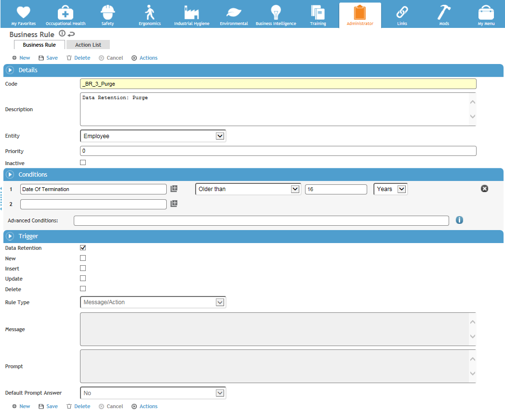
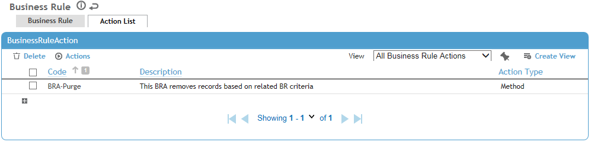

This process deletes Ready to Purge records from the Record Histories tables.
To set up Employee record purging:
Create a business rule with Purge conditions. See the image below.

-
For additional information on working with business rules, see the Cority User Guide.
Using the Action List tab, add the BRA-Purge action to the business rule.

From Actions menu, select Preview Records to Purge.
Run the Start Trigger Thread (<your Cority domain>/businessrules/starttriggerthread.rails) script to purge all records that are in the Ready to Purge state.
Optional: Run the report you created in step 5 of the last procedure. The report should not display any records, because they will all have been purged.
When an employee’s records are purged, the employee's Record History is permanently deleted as well.
The Event Log tracks any archive and purge activity.